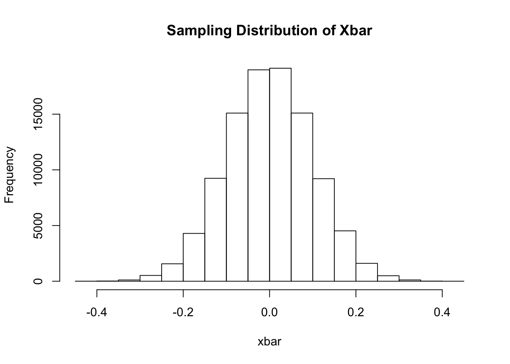
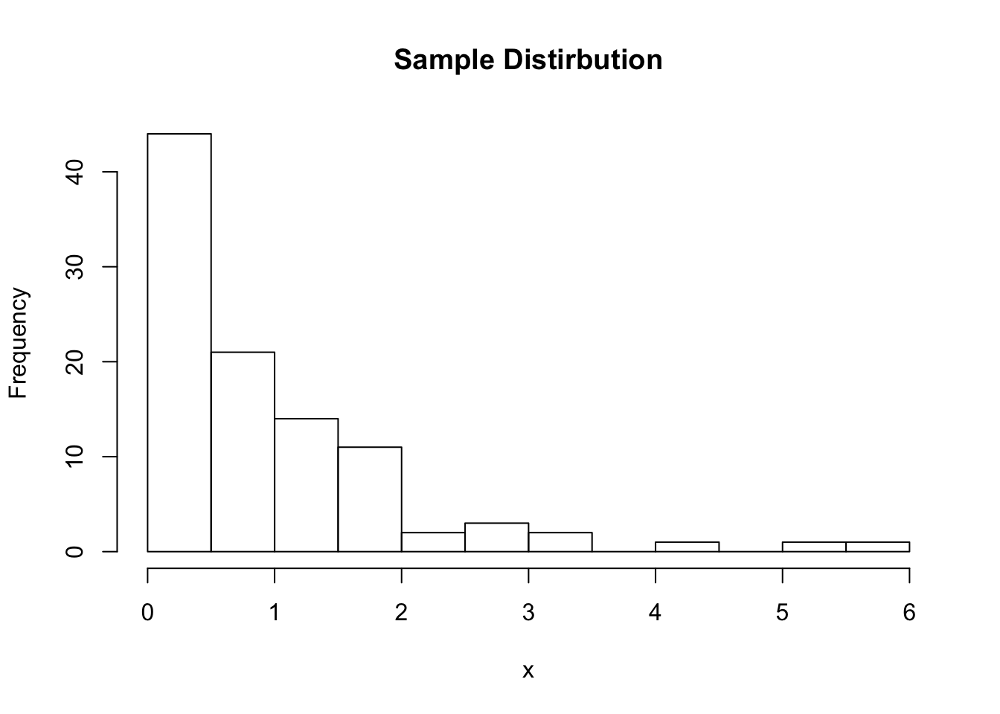
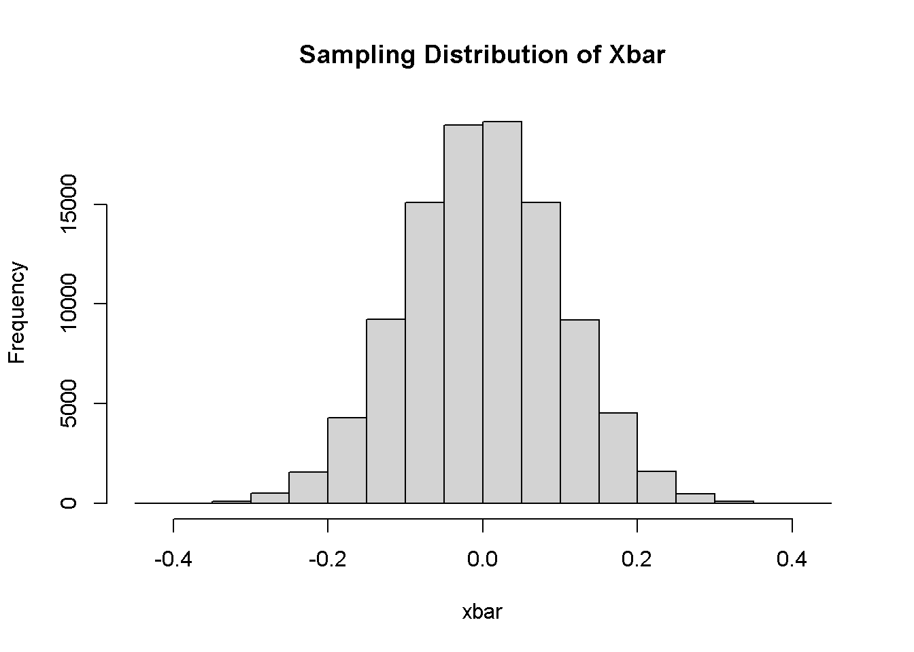

3 Sampling Distributions and the CLT
Sampling distributions are theoretical objects that represent the probability distribution of a statistic (usually the sample mean).
The sampling distribution of the sample mean is the distribution of means that result from taking all possible samples of size \(n\) from the population.
We can build some intuition for what this means in R.
Let’s start by letting the population distribution be normal with mean \(\mu=0\) and variance \(\sigma^2=1\). We can take a sample of size \(n=100\) from that population and plot the sample distribution.
## [1] 0.008768
While we cannot generate all possible samples of size \(n\) from this normal distribution, we can take a large number.
Let \(R=100,000\) be the number of samples we want to generate. We will construct a for loop in R to do the following: (1) generate a random sample of size \(n\) from the population; (2) compute the sample mean and store the result in a vector called xbar.
R = 100000
xbar = double(R)
for(r in 1:R){
x = rnorm(n=100, mean=0, sd=1)
xbar[r] = mean(x)
}
hist(xbar, main="Sampling Distribution of Xbar")
This plot is the distribution of sample means after taking \(R=100,000\) samples with size \(n=100\) from the population.
Notice that this again looks like a normal distribution. The mean looks the same as the distribution of \(X\), but the variance looks much smaller.
In fact, when the population distribution is \(N(\mu,\sigma^2)\), then the distribution of \(\bar{X}\) is \(N(\mu,\sigma^2/n)\). In this case, we know that \(E(\bar{X})=E(X)=\mu=0\) and \(Var(\bar{X})=Var(X)/n=\sigma^2/n=1/100=0.01\).
Let’s check to see what the mean and variance are in our approximation of the sampling distribution.
## [1] 0.0004032## [1] 0.009978Very close to the true values!
The next question to consider is what if our population distribution was not normally distributed? What if it was skewed to the right or left?
Let’s assume \(X\) has a Exponential\((\beta)\) distribution where \(\beta=1\) is a rate parameter. We can again take one individual sample from this population distribution.

Based on this sample, it appears that the population distribution is highly asymmetric and skewed to the right.
In this case, should we still expect the sampling distribution of the sample mean to be normal? Let’s go through the same exercise as before.
R = 100000
xbar = double(R)
for(r in 1:R){
x = rexp(n=100, rate=1)
xbar[r] = mean(x)
}
hist(xbar, main="Sampling Distribution of Xbar")
The distribution of sample means again looks normal!
In fact, the Central Limit Theorem guarantees that this will be the case as the sample size \(n\) gets large. Then for any population distribution, we know that the distribution of \(\bar{X}\) will be approximately normal with mean \(E(\bar{X})=E(X)\) and \(Var(\bar{X})=Var(X)/n\).
Since \(X\sim\text{Exponential}(\beta)\) with \(\beta=1\), it can be shown that \(E(X)=\beta=1\) and \(Var(X)=\beta^2=1\). Therefore, \(\bar{X}\) is approximately normal with mean \(E(\bar{X})=E(X)=1\) and variance \(Var(\bar{X})=Var(X)/n=1/100=0.01\).
We again check these results using our approximate sampling distribution and find consistent answers.
## [1] 1## [1] 0.01004